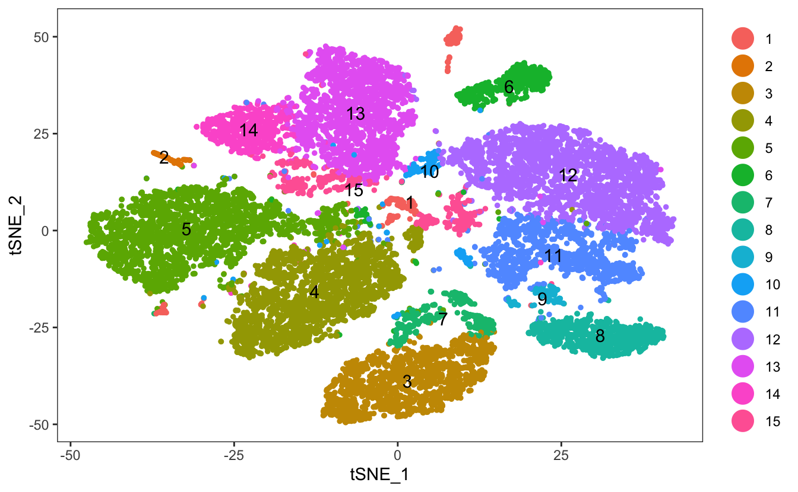
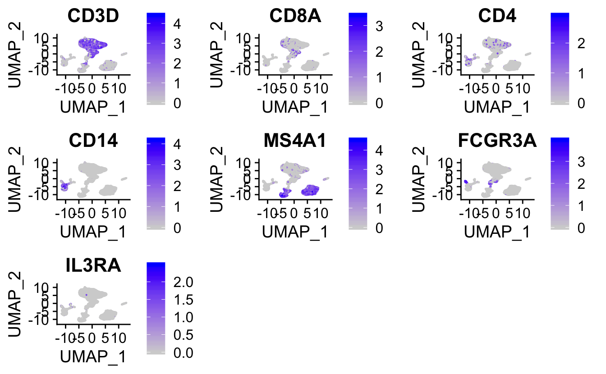
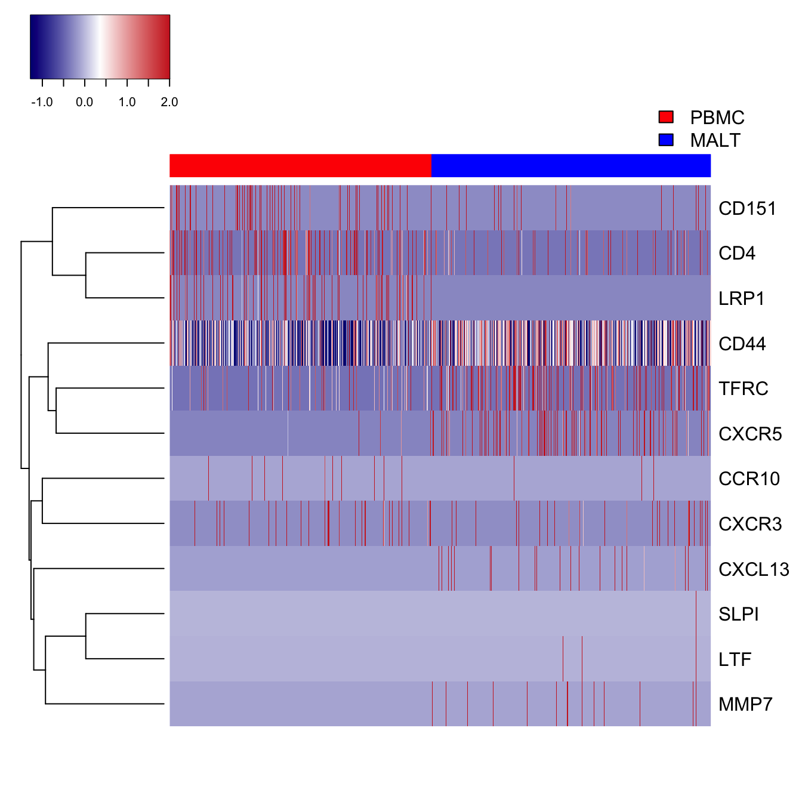
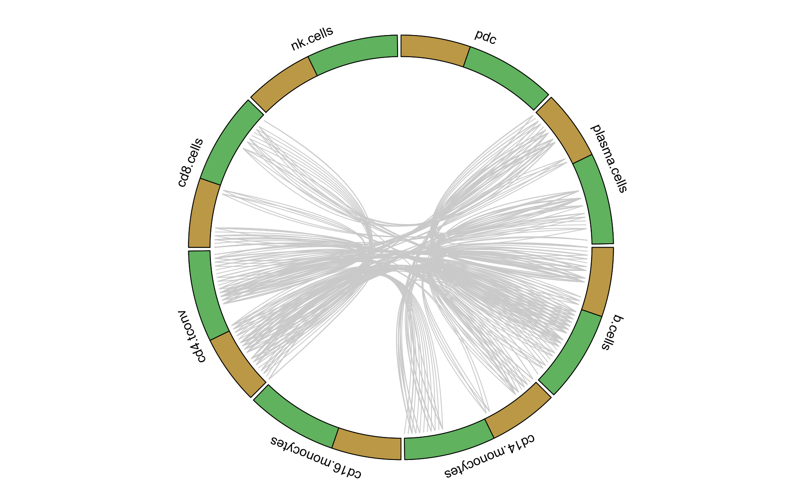

celltalker
Anthony Cillo
2020-01-08
celltalker.RmdIntroduction
Amongst the many types of analysis possible with single-cell RNAseq data is the assessment of putative cell-cell communication. celltalker seeks to evaluate cell-cell communication (that is, “talking”) by looking for expression of known pairs of ligands and receptors within and between cell populations. Any set of known ligands and receptors can be used; included in this package is the set of ligands and receptors described by the excellent work of Ramilowski et al (Nature Communications, 2015). We recommend using this list of ligands and receptors as a starting point, and either curating your own list of known ligands and receptors. Alternatively, work by Vento-Tormo et al (Nature, 2018) has recently extensively curated ligands and receptors, and will be implemented in future versions of cellTalker.
For the sake of robustness, we assume that there are multiple replicate samples in each group and that we are only interested in only finding consistently expressed ligands and receptors across groups (as opposed to potentially suprious interactions that are only found in one individual replicate). We accomplish this by looking at individual expression matrices for each individual sample in a group, and pulling only those interactions that meet a given (arbitrary) threshold.
In this vignette, we demonstrate a basic use of cellTalker to evaluate putative ligand/receptor interactions in peripheral blood (N=2) and tonsils from healthy donors (N=3). This data is publically available from our recently published dataset (Cillo et al, Immunity 2020) on the NCBI Gene Expression Omnibus Series GSE139324.
Vignette overview
This vignette demonstrates a standard use of celltalker on publically available data from 10X Genomics. We will go through the following steps:
- Cluster our data using a standard Seurat workflow (v.3.1.1)
- Use celltalker to build lists of consistently expressed ligands and receptors within samples groups
- Determine putative ligand/receptor interactions with a groups
- Evaluate uniquely expressed ligand/receptor pairs between groups
- Identifying and visualizing unique ligand/receptor pairs in a group
Clustering data with Seurat
Our vignette begins with a standard clustering analysis and identification of immune lineages in Seurat, and assumes that the feature/barcode matrices have been downloaded from GEO.
suppressMessages({
library(Seurat)
library(celltalker)
})
#Set seed for reproducibility
set.seed(02221989)
#Read in raw data
setwd(paste(path.to.working,"/data_matrices/",sep=""))
data.paths <- list.files()
specific.paths <- paste(path.to.working,"data_matrices",data.paths,"GRCh38",sep="/")
setwd(path.to.working)
raw.data <- Read10X(specific.paths)
#Create metadata
sample.data <- data.frame(matrix(data=NA,nrow=ncol(raw.data),ncol=2))
rownames(sample.data) <- colnames(raw.data)
colnames(sample.data) <- c("sample.id","sample.type")
sample.data[grep("^[A-z]",rownames(sample.data)),"sample.id"] <- "pbmc_1"
sample.data[grep("^2",rownames(sample.data)),"sample.id"] <- "tonsil_1"
sample.data[grep("^3",rownames(sample.data)),"sample.id"] <- "pbmc_2"
sample.data[grep("^4",rownames(sample.data)),"sample.id"] <- "tonsil_2"
sample.data[grep("^5",rownames(sample.data)),"sample.id"] <- "pbmc_3"
sample.data[grep("^6",rownames(sample.data)),"sample.id"] <- "tonsil_3"
sample.data[,"sample.type"] <- sapply(strsplit(sample.data$sample.id,split="_"),function(x) x[1])
#Create a Seurat object with associated metadata
ser.obj <- CreateSeuratObject(counts=raw.data,meta.data=sample.data)## Warning: Feature names cannot have underscores ('_'), replacing with dashes
## ('-')#Standard Seurat workflow
ser.obj <- NormalizeData(ser.obj)
ser.obj <- FindVariableFeatures(ser.obj)
ser.obj <- ScaleData(ser.obj)## Centering and scaling data matrixser.obj <- RunPCA(ser.obj)## PC_ 1
## Positive: S100A6, IL32, S100A4, ANXA1, VIM, FTL, TRBC1, SRGN, S100A9, S100A8
## TYROBP, LYZ, CTSW, XIST, NEAT1, VCAN, S100A12, FCER1G, S100A11, FCN1
## PLAC8, ID2, CCL5, NKG7, CST3, CSTA, ZFP36, IL1B, MT2A, KLRB1
## Negative: RGS13, KIAA0101, NUSAP1, AURKB, MKI67, BIRC5, TYMS, TOP2A, TK1, CDKN3
## UBE2C, PTTG1, CDK1, STMN1, CCNB2, GTSE1, BIK, RRM2, TCL1A, SHCBP1
## CDCA3, CDC20, TPX2, LRMP, CCNA2, MND1, CCNB1, PBK, ZWINT, RMI2
## PC_ 2
## Positive: CST3, LYZ, FCN1, CSTA, S100A9, S100A8, TYROBP, LST1, FGL2, VCAN
## S100A12, SERPINA1, MNDA, FCER1G, CLEC7A, MS4A6A, CD14, CFD, IL1B, TYMP
## LGALS1, RP11-1143G9.4, AIF1, CTSS, NAMPT, CFP, TNFSF13B, CSF3R, MPEG1, TMEM176B
## Negative: IL32, NPM1, CD69, TRBC1, ISG20, ITM2A, IGKC, IGHA1, HSP90AB1, DDIT4
## HIST1H4C, PSIP1, AQP3, MYC, PIM2, HMGN1, PASK, NUCB2, HSPA1B, HSPB1
## CD79A, SUSD3, KLRB1, SYNE2, CHI3L2, IGHG3, IGLC2, FKBP11, IGHG1, SH2D1A
## PC_ 3
## Positive: IL32, NKG7, CTSW, TRBC1, GZMA, CST7, GNLY, MKI67, ANXA1, TOP2A
## CCL5, PRF1, BIRC5, S100A4, KLRB1, CCNA2, AURKB, CENPF, GTSE1, CDKN3
## KLRD1, UBE2C, CDK1, TYMS, TPX2, RRM2, ID2, S100A6, FGFBP2, CDC20
## Negative: HLA-DRA, HLA-DQA1, HLA-DQB1, CD79A, HLA-DRB1, MS4A1, CD74, HLA-DPA1, HLA-DPB1, CD79B
## HLA-DMA, HLA-DMB, BANK1, VPREB3, IGKC, HLA-DRB5, MEF2C, CD22, IRF8, CD19
## SMIM14, FCRLA, HLA-DOB, CD24, CD40, FCER2, BLK, HLA-DQA2, IGHD, CTSH
## PC_ 4
## Positive: TOP2A, UBE2C, MKI67, GTSE1, CENPF, AURKB, PLK1, CCNA2, CDK1, CDCA8
## HMMR, CDCA3, CDC20, TPX2, CDKN3, DLGAP5, CENPE, BIRC5, CCNB2, CENPA
## KIF2C, CKAP2L, PBK, NUSAP1, KIFC1, AURKA, SPC25, NUF2, KIF23, ASPM
## Negative: NKG7, GNLY, CST7, GZMB, GZMA, PRF1, KLRD1, FGFBP2, CCL5, KLRF1
## HOPX, CTSW, GZMH, TRDC, FCGR3A, SPON2, CLIC3, MATK, ADGRG1, S1PR5
## CCL4, CMC1, XCL2, PFN1, CD160, FCRL6, IL2RB, TRGC1, KLRC1, C12orf75
## PC_ 5
## Positive: ICA1, PDCD1, TBC1D4, ITM2A, ICOS, MAF, TOX2, IL32, TNFRSF4, PASK
## PKM, SMCO4, ACTG1, CORO1B, CTLA4, NPM1, TRBC1, PCAT29, TIGIT, AC133644.2
## TOX, ANP32B, ENO1, GBP2, COTL1, GAPDH, SUSD3, PIM2, AQP3, SERPINA9
## Negative: NKG7, GNLY, KLRD1, FGFBP2, GZMB, GZMA, KLRF1, CCL5, PRF1, TRDC
## GZMH, CST7, CTSW, BANK1, MATK, PLK1, HMMR, HLA-DPB1, CENPA, CLIC3
## GTSE1, CENPE, CCL4, SPON2, PDLIM1, HLA-DPA1, CDCA8, DLGAP5, TPX2, IGHDElbowPlot(ser.obj)
#We will select the first 15 PCs to use
ser.obj <- RunUMAP(ser.obj,reduction="pca",dims=1:15)## Warning: The default method for RunUMAP has changed from calling Python UMAP via reticulate to the R-native UWOT using the cosine metric
## To use Python UMAP via reticulate, set umap.method to 'umap-learn' and metric to 'correlation'
## This message will be shown once per session## 00:25:40 UMAP embedding parameters a = 0.9922 b = 1.112## 00:25:40 Read 15524 rows and found 15 numeric columns## 00:25:40 Using Annoy for neighbor search, n_neighbors = 30## 00:25:40 Building Annoy index with metric = cosine, n_trees = 50## 0% 10 20 30 40 50 60 70 80 90 100%## [----|----|----|----|----|----|----|----|----|----|## **************************************************|
## 00:25:42 Writing NN index file to temp file /var/folders/_p/n2bykf5555bcpmdl3yfw8y540000gn/T//Rtmp1P2ywh/file180f66b002cad
## 00:25:42 Searching Annoy index using 1 thread, search_k = 3000
## 00:25:47 Annoy recall = 100%
## 00:25:48 Commencing smooth kNN distance calibration using 1 thread
## 00:25:48 Initializing from normalized Laplacian + noise
## 00:25:50 Commencing optimization for 200 epochs, with 656278 positive edges
## 00:26:00 Optimization finishedser.obj <- FindNeighbors(ser.obj,reduction="pca",dims=1:15)## Computing nearest neighbor graph
## Computing SNNser.obj <- FindClusters(ser.obj,resolution=0.5)## Modularity Optimizer version 1.3.0 by Ludo Waltman and Nees Jan van Eck
##
## Number of nodes: 15524
## Number of edges: 543084
##
## Running Louvain algorithm...
## Maximum modularity in 10 random starts: 0.9185
## Number of communities: 17
## Elapsed time: 2 secondsLet’s have a look at our data.
p1 <- DimPlot(ser.obj,reduction="umap",group.by="sample.id")
p2 <- DimPlot(ser.obj,reduction="umap",group.by="sample.type")
p3 <- DimPlot(ser.obj,reduction="umap",group.by="RNA_snn_res.0.5",label=T) + NoLegend()## Warning: Using `as.character()` on a quosure is deprecated as of rlang 0.3.0.
## Please use `as_label()` or `as_name()` instead.
## This warning is displayed once per session.cowplot::plot_grid(p1,p2,p3)
Great! Now let’s (roughly) identify our cell types by having a look at a feature plot.
FeaturePlot(ser.obj,reduction="umap",features=c("CD3D","CD8A","CD4","CD14","MS4A1","FCGR3A","IL3RA"))
#Add metadata for cell types
cell.types <- vector("logical",length=ncol(ser.obj))
names(cell.types) <- colnames(ser.obj)
cell.types[ser.obj@meta.data$RNA_snn_res.0.5=="0"] <- "cd4.tconv"
cell.types[ser.obj@meta.data$RNA_snn_res.0.5=="1"] <- "cd4.tconv"
cell.types[ser.obj@meta.data$RNA_snn_res.0.5=="2"] <- "b.cells"
cell.types[ser.obj@meta.data$RNA_snn_res.0.5=="3"] <- "b.cells"
cell.types[ser.obj@meta.data$RNA_snn_res.0.5=="4"] <- "cd14.monocytes"
cell.types[ser.obj@meta.data$RNA_snn_res.0.5=="5"] <- "cd8.cells"
cell.types[ser.obj@meta.data$RNA_snn_res.0.5=="6"] <- "cd4.tconv"
cell.types[ser.obj@meta.data$RNA_snn_res.0.5=="7"] <- "cd4.tconv"
cell.types[ser.obj@meta.data$RNA_snn_res.0.5=="8"] <- "b.cells"
cell.types[ser.obj@meta.data$RNA_snn_res.0.5=="9"] <- "b.cells"
cell.types[ser.obj@meta.data$RNA_snn_res.0.5=="10"] <- "nk.cells"
cell.types[ser.obj@meta.data$RNA_snn_res.0.5=="11"] <- "cd8.cells"
cell.types[ser.obj@meta.data$RNA_snn_res.0.5=="12"] <- "plasma.cells"
cell.types[ser.obj@meta.data$RNA_snn_res.0.5=="13"] <- "cd14.monocytes"
cell.types[ser.obj@meta.data$RNA_snn_res.0.5=="14"] <- "cd16.monocytes"
cell.types[ser.obj@meta.data$RNA_snn_res.0.5=="15"] <- "pdc"
cell.types[ser.obj@meta.data$RNA_snn_res.0.5=="16"] <- "RBCs"
ser.obj[["cell.types"]] <- cell.types
#Let's remove RBCs from our analysis
rbc.cell.names <- names(cell.types)[ser.obj@meta.data$RNA_snn_res.0.5=="16"]
ser.obj <- ser.obj[,!colnames(ser.obj) %in% rbc.cell.names]Consistently expressed ligands and receptors
Now that we have identified and named clusters within our data, we will proceed with the celltalker analysis. Shipped with this packages is the data.frame “ramilowski_pairs”, which is a data.frame consisting of ligands, receptors, and putative ligand_receptor pairs. Please refer to the “data-raw” folder, and the “create_ramolowski_pairs_data.R” file if your interested in how this data.frame was constructed.
First, we will perform differential gene expression analysis to prune the universe of potential ligands and receptors down to those that are differentially expressed between our two sample groups. We identify ligands and receptors (from ramilowski_pairs) present in our overall dataset, then perform differential expression using those ligands and receptors.
Second, we will create a tibble with individual matrices for each replicate sample. We use tibbles (and more broadly, the tidyverse) throughout celltalker to make data manipulation more streamlined and to use the hierarchical structure of tibbles as containers for relevant pieces of data.
#Check out ramilowski_pairs data.frame
head(ramilowski_pairs)## ligand receptor pair
## 1 A2M LRP1 A2M_LRP1
## 2 AANAT MTNR1A AANAT_MTNR1A
## 3 AANAT MTNR1B AANAT_MTNR1B
## 4 ACE AGTR2 ACE_AGTR2
## 5 ACE BDKRB2 ACE_BDKRB2
## 6 ADAM10 AXL ADAM10_AXLdim(ramilowski_pairs)## [1] 2557 3#There are 2,557 unique ligand/receptor interactions in this dataset
#Identification of differentially expressed ligands and receptors
#Identify ligands and receptors in our dataset
ligs <- as.character(unique(ramilowski_pairs$ligand))
recs <- as.character(unique(ramilowski_pairs$receptor))
ligs.present <- rownames(ser.obj)[rownames(ser.obj) %in% ligs]
recs.present <- rownames(ser.obj)[rownames(ser.obj) %in% recs]
genes.to.use <- union(ligs.present,recs.present)
#Use FindAllMarkers for differentially expressed ligands and receptors between groups
Idents(ser.obj) <- "sample.type"
markers <- FindAllMarkers(ser.obj,assay="RNA",features=genes.to.use,only.pos=TRUE)## Calculating cluster pbmc## Calculating cluster tonsil## [1] 61#Yields 61 ligands and receptors to evaluate
#Filter ramilowski pairs
interactions.forward1 <- ramilowski_pairs[as.character(ramilowski_pairs$ligand) %in% ligs.recs.use,]
interactions.forward2 <- ramilowski_pairs[as.character(ramilowski_pairs$receptor) %in% ligs.recs.use,]
interact.for <- rbind(interactions.forward1,interactions.forward2)
dim(interact.for)## [1] 241 3#Yields 241 ligand and receptor interactions to evaluate
#Create data for celltalker
expr.mat <- GetAssayData(ser.obj,slot="counts")
defined.clusters <- ser.obj@meta.data$cell.types
defined.groups <- ser.obj@meta.data$sample.type
defined.replicates <- ser.obj@meta.data$sample.id
reshaped.matrices <- reshape_matrices(count.matrix=expr.mat,clusters=defined.clusters,groups=defined.groups,replicates=defined.replicates,ligands.and.receptors=interact.for)
#Check out the hierarchy of the tibble
reshaped.matrices## # A tibble: 2 x 2
## group samples
## <chr> <list>
## 1 pbmc <tibble [3 × 2]>
## 2 tonsil <tibble [3 × 2]>## # A tibble: 6 x 3
## group sample expr.matrices
## <chr> <chr> <list>
## 1 pbmc pbmc_1 <named list [8]>
## 2 pbmc pbmc_2 <named list [8]>
## 3 pbmc pbmc_3 <named list [8]>
## 4 tonsil tonsil_1 <named list [8]>
## 5 tonsil tonsil_2 <named list [8]>
## 6 tonsil tonsil_3 <named list [8]>names(pull(unnest(reshaped.matrices,cols="samples"))[[1]])## [1] "b.cells" "cd14.monocytes" "cd16.monocytes" "cd4.tconv"
## [5] "cd8.cells" "nk.cells" "pdc" "plasma.cells"What we have done in this initial step is to separate our overall expression matrix into a series of individual expression matrices from each sample. An overview of the resulting tibble is as follows:
2-column tibble containing group and samples - “samples” column from the top-level contains 3-column tibble - “expr.matrices” from above is a list of count matrices from each cluster of an individual replicate (in this case, clusters are the cell types)
Next, we can create a tibble of consistently expressed ligands and receptors for each group using the create_lig_rec_tib function.
consistent.lig.recs <- create_lig_rec_tib(exp.tib=reshaped.matrices,clusters=defined.clusters,groups=defined.groups,replicates=defined.replicates,cells.reqd=10,freq.pos.reqd=0.5,ligands.and.receptors=interact.for)
consistent.lig.recs## # A tibble: 2 x 2
## group lig.rec.exp
## <chr> <list>
## 1 pbmc <tibble [8 × 2]>
## 2 tonsil <tibble [8 × 2]>## # A tibble: 8 x 2
## cluster.id ligands.and.receptors
## <chr> <named list>
## 1 b.cells <named list [2]>
## 2 cd14.monocytes <named list [2]>
## 3 cd16.monocytes <named list [2]>
## 4 cd4.tconv <named list [2]>
## 5 cd8.cells <named list [2]>
## 6 nk.cells <named list [2]>
## 7 pdc <named list [2]>
## 8 plasma.cells <named list [2]>## $ligands
## [1] "S100A9" "S100A8" "IL1B" "FN1" "BTLA" "SPON2"
## [7] "LRPAP1" "VCAN" "CD14" "LY86" "HLA-G" "HLA-A"
## [13] "HLA-E" "HLA-B" "LTB" "HSPA1A" "CD24" "NAMPT"
## [19] "TIMP1" "CD40LG" "ADAM28" "PNOC" "IL7" "ANXA1"
## [25] "SEMA4D" "VIM" "PSAP" "LYZ" "SELPLG" "HMGB1"
## [31] "TNFSF13B" "GZMB" "CALM1" "SERPINA1" "HSP90AA1" "B2M"
## [37] "PKM" "IL16" "CCL5" "CCL3" "ICAM2" "CD70"
## [43] "ICAM1" "ICAM3" "TGFB1" "FLT3LG" "APP"
##
## $receptors
## [1] "CSF3R" "TGFBR3" "KCNA3" "CD53" "CD1A" "CD247"
## [7] "SELL" "CXCR4" "ITGA4" "GRM7" "TGFBR2" "CCR5"
## [13] "TFRC" "TLR1" "IL7R" "CD180" "ADRB2" "CD74"
## [19] "HMMR" "HLA-F" "KCNQ5" "IGF2R" "CCR6" "CD36"
## [25] "CXCR3" "PGRMC1" "CD72" "TGFBR1" "ABCA1" "IFITM1"
## [31] "CD81" "KCNQ1" "CD44" "CD82" "IL10RA" "CD3D"
## [37] "CD3G" "CXCR5" "SORL1" "APLP2" "ITGB1" "FAS"
## [43] "CD27" "CD4" "KLRG1" "CLEC2B" "KLRD1" "KLRC1"
## [49] "PDE1B" "CD63" "TNFRSF17" "CD19" "ITGAL" "ITGAM"
## [55] "TNFRSF13B" "ERBB2" "PTPRA" "CD40" "OPRL1" "INSR"
## [61] "TYROBP" "CD79A" "KCNN4" "FPR2" "LILRB2" "LILRB1"
## [67] "KIR2DL3" "KIR2DL1" "KIR3DL2" "TNFRSF13C" "CELSR1" "ITGB2"We can see that we have now recovered a list of consistently expressed ligands and receptors from each cluster in each experimental group, based on the criteria specified above (i.e. at least 10 cells in each cluster express the ligand/receptor and at least 50% of replicates in a group express the ligand/receptor). Functionally, since we only have 2 replicates in each group here, we require all replicate to express the ligand/receptor to count it as consistently expressed.
Determine putative ligand/receptor pairs
Now that we have consistently expressed ligands and receptors, we will look for interactions (as defined in ramilowski_pairs$pair) within and between clusters in a given group. The parameter “freq.group.in.cluster” allows us to only examine clusters that consist of (in this case) >5% of cells from a given group for interactions.
put.int <- putative_interactions(ligand.receptor.tibble=consistent.lig.recs,clusters=defined.clusters,groups=defined.groups,freq.group.in.cluster=0.05,ligands.and.receptors=interact.for)## Warning: `cols` is now required.
## Please use `cols = c(lig.rec.exp)`
## Warning: `cols` is now required.
## Please use `cols = c(lig.rec.exp)`Here, the nested tibble contains the sample groups and a list of ligand/receptor pairs for each group along with the clusters that particpate in the ligand/receptor interactions.
Identifying and visualizing unique ligand/receptor pairs in a group
Now that we have our lists of ligand/receptor interactions, we can investigate which one are unique to each group (using the unique_interactions function) and plot the results (using the circos_plot function) to visualize the differences between groups.
#Identify unique ligand/receptor interactions present in each sample
unique.ints <- unique_interactions(put.int,group1="pbmc",group2="tonsil",interact.for)
#Get data to plot circos for PBMC
pbmc.to.plot <- pull(unique.ints[1,2])[[1]]
for.circos.pbmc <- pull(put.int[1,2])[[1]][pbmc.to.plot]
circos_plot(interactions=for.circos.pbmc,clusters=defined.clusters)## Note: 1 point is out of plotting region in sector 'b.cells', track '1'.## Note: 1 point is out of plotting region in sector 'cd14.monocytes',
## track '1'.## Note: 1 point is out of plotting region in sector 'cd16.monocytes',
## track '1'.## Note: 1 point is out of plotting region in sector 'cd4.tconv', track
## '1'.## Note: 1 point is out of plotting region in sector 'cd8.cells', track
## '1'.## Note: 1 point is out of plotting region in sector 'nk.cells', track
## '1'.## Note: 1 point is out of plotting region in sector 'pdc', track '1'.## Note: 1 point is out of plotting region in sector 'plasma.cells', track
## '1'.
## [1] "Plotted interactions"#Get data to plot circos for tonsil
tonsil.to.plot <- pull(unique.ints[2,2])[[1]]
for.circos.tonsil <- pull(put.int[2,2])[[1]][tonsil.to.plot]
circos_plot(interactions=for.circos.tonsil,clusters=defined.clusters)## Note: 1 point is out of plotting region in sector 'b.cells', track '1'.## Note: 1 point is out of plotting region in sector 'cd14.monocytes',
## track '1'.## Note: 1 point is out of plotting region in sector 'cd16.monocytes',
## track '1'.## Note: 1 point is out of plotting region in sector 'cd4.tconv', track
## '1'.## Note: 1 point is out of plotting region in sector 'cd8.cells', track
## '1'.## Note: 1 point is out of plotting region in sector 'nk.cells', track
## '1'.## Note: 1 point is out of plotting region in sector 'pdc', track '1'.## Note: 1 point is out of plotting region in sector 'plasma.cells', track
## '1'.
## [1] "Plotted interactions"Summary
celltalker allows a user to infer ligand/receptor interactions. This vignette has walked through how to identify and visualize unique interactions, staring with raw count data and metadata. Future developments will focus on differential networks of cell-cell communication for given ligand/receptor pairs. Stay tuned for future updates. Until then, have fun investigating how your cells “talk” to each other!